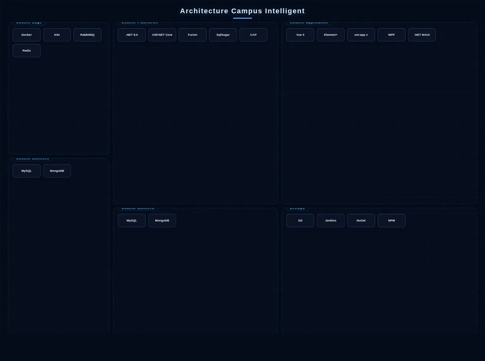
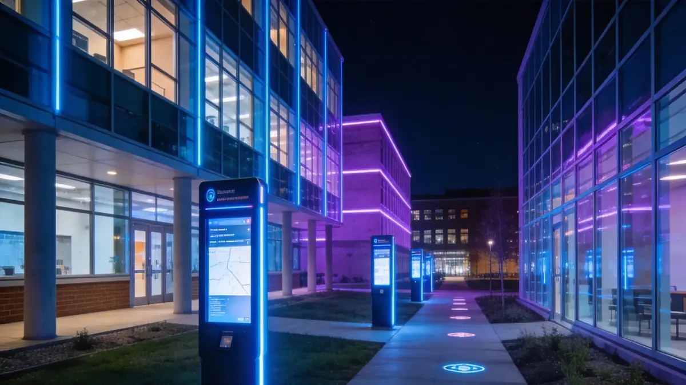
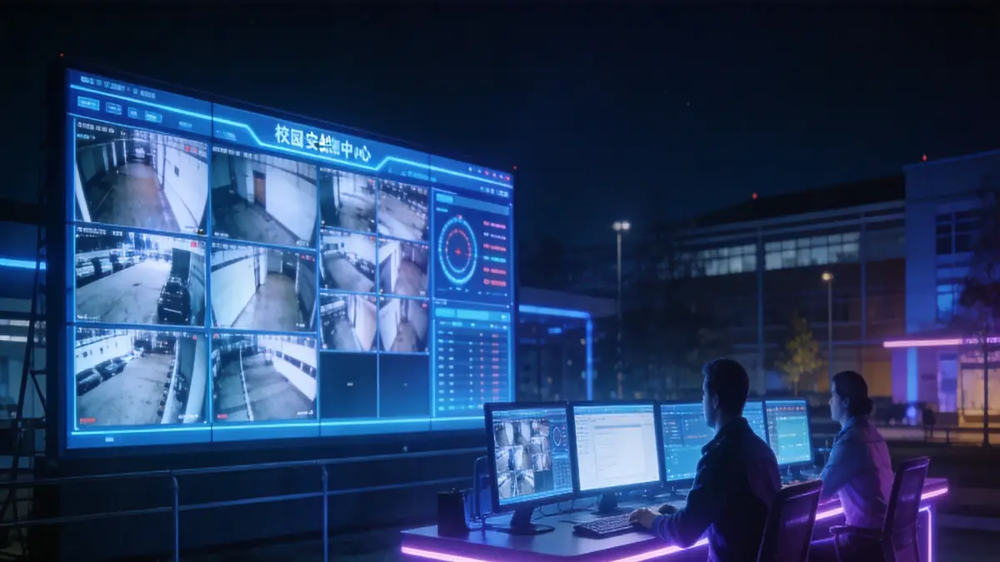
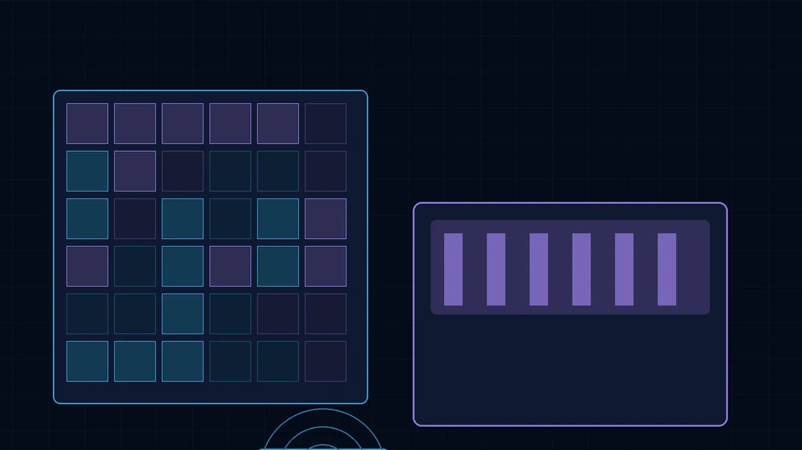
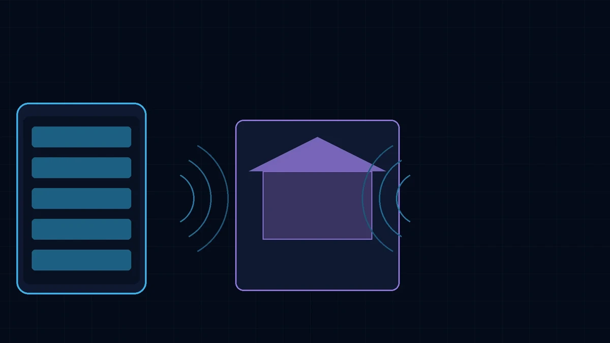
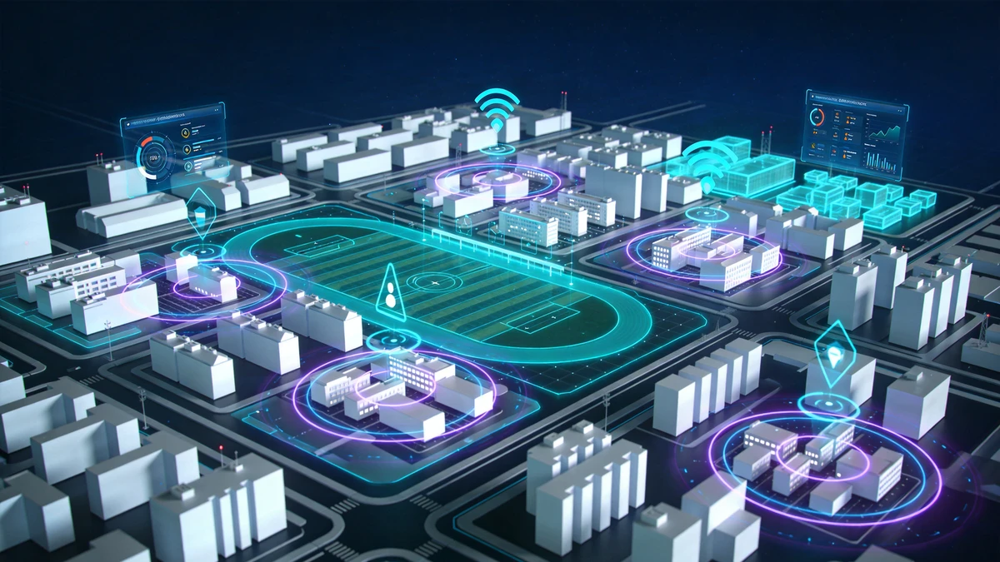

Architecture de la Solution

Architecture intégrée campus intelligent
Le Campus Intelligent adopte une architecture à quatre couches Perception-Réseau-Plateforme-Application. La couche perception connecte le contrôle d'accès, la surveillance, l'énergie et les terminaux de surveillance environnementale via des passerelles IoT, avec des nœuds edge effectuant le nettoyage de données et le chaînage local. La couche plateforme construit une plateforme de données intermédiaires du campus sur .NET 8.0 + ASP.NET Core + Furion, avec DotNetCore.CAP supportant les événements distribués et la cohérence transactionnelle entre sous-systèmes, des clusters RabbitMQ reliant les événements métier entre les sous-systèmes académiques, sécurité, logistique et actifs, Redis Cluster mettant en cache les données à haute fréquence comme les emplois du temps, la présence et les transactions de cartes intelligentes, et SqlSugar complétant le mappage ORM multi-sources; MySQL porte le cœur métier, tandis que MongoDB stocke les journaux comportementaux et les ressources pédagogiques non structurées. La couche application fournit un cockpit de gestion Vue 3 + Element Plus et une application de service campus tout-en-un avec uni-app x (Vapor Mode) pour le corps professoral et les étudiants, avec des clients de gestion de bureau construits sur WPF ou .NET MAUI; réalisant l'authentification d'identité unifiée, l'interopérabilité des données et le support à la décision intelligente entre systèmes. La chaîne DevOps utilise Git + Jenkins + NuGet/NPM pour la livraison continue, avec Docker + Kubernetes assurant l'élasticité.
Composition de la Solution
Scénarios d'Application

Sécurité et prévention
Protection périmétrique du campus, surveillance zones clés, alertes étrangers et liaison alarme one-click.

Gestion pédagogique
Contrôle environnement salle intelligente, gestion des équipements multimédias et statistiques de présence en classe.

Services logistiques
Contrôle d'accès dortoirs, suivi consommation cafétéria, workflow maintenance et contrôle économie d'énergie.

Communication école-famille
Notifications entrée/sortie étudiants, validation rendez-vous visiteurs et push des activités campus.
Avantages de la Solution
Le système adopte une conception modulaire configurable selon l'échelle de l'établissement, supportant le déploiement hiérarchisé des maternelles aux grandes universités. Une plateforme unifiée réduit les coûts de maintenance multi-système, et les API ouvertes permettent une intégration transparente avec les systèmes académiques existants.
Valeur de la Solution
Amélioration de la gestion sécurité campus, optimisation de l'allocation des ressources pédagogiques, réduction de la consommation énergétique, et création d'un environnement d'apprentissage et de vie sûr, pratique et confortable pour les étudiants et enseignants.
Pratique Projet
AXLTeco a déployé avec succès des solutions de campus intelligent dans plusieurs écoles au Nigéria, couvrant les sous-systèmes de contrôle d'accès, de vidéosurveillance et de diffusion, améliorant significativement la gestion sécurité campus et l'efficacité opérationnelle.
